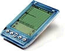

| Handspring Visor
After owning our PalmPilot Professionals for 3 years, it was time to upgrade, but what to? After lots of careful consideration, we decided to go for the Handspring Visor Deluxe. The people behind Handspring, after all, were the people who came up with the Palm idea. We couldn't go far wrong. The Handspring Visor Deluxe doesn't differ in size much to the Palm III series, although is obviously bigger than the Palm V series. It uses AAA batteries, and is very Palm-esque (only it looks cooler... less corporate). We've had no real software problems with them, but unfortunately we've both had screen smashing accidents. We had to pay around £60 and post our Visor's to the Netherlands to get replacements. The casing just isn't as strong as the PalmPilot Professional was (I dropped that a few times.... maybe I just shouldn't have these things). New visors were sent out, and all was ok again. So, do we use them a lot? Yes, every day on the tube I catch up with email, the news, interesting articles that I don't get around to reading otherwise Would I buy another one? Definitely a PalmOS handheld, but as new models are coming out all the time, we'd probably get something new. Colour anyone? |
 Purchase from: Amazon Related Links:
|
|
Back to index page |